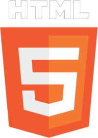
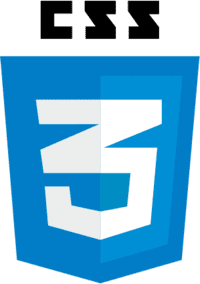
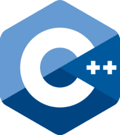
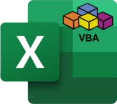
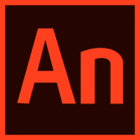
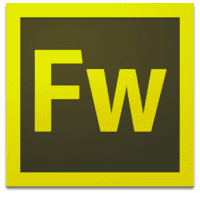

Ágil, proactivo, empático y creativo. Con habilidades digitales y de inteligencia emocional. Orientado al aprendizaje continuo y con capacidad de comunicación efectiva. En la búsqueda de un nuevo desafío laboral en donde pueda aplicar y poner en práctica los lenguajes aprendidos para atender las diferentes necesidades del mercado con el objetivo del desarrollo tanto personal como profesional. Me gustaría, además, contar con la posibilidad de realizar home office.
Empecé una carrera en la UBA, análisis de sistemas, en el año 2009. No terminé de superar el CBC y me fui en 2011 definitivamente. Luego me dediqué solo a trabajar por un tiempo. Estudié programación dos años en UTN FRGP desde 2015 a 2017. Tengo realizados cursos como el de Educación IT de Diseño Web Profesional entre 2012 y 2013. Actualmente trabajo de forma independiente en mi emprendimiento que no está relacionado con la informática. Pero mi idea es ir cambiando hacia este rubro ya que es lo que me gusta. También trabajé manteniendo el frontend de la web (generando el contenido, administrando la web, etc) de UTN FRGP con el CMS Joomla durante mi ultimo año y pico de cursada. Hoy en día estoy estudiando en freeCodeCamp donde completé el curso de JavaScript y más recientemente tambien el curso "Responsive Web Design" de la misma plataforma para repasar y aprender algún concepto nuevo. También estoy realizando pequeños proyectos y otros cursos en paralelo que iré sumando a este medio.
Estas son algunas de las tecnologías en las que tengo conocimientos y algunas otras aptitudes:






Menos mal que no tocaste mi foto de perfil, si no se caía el sistema!